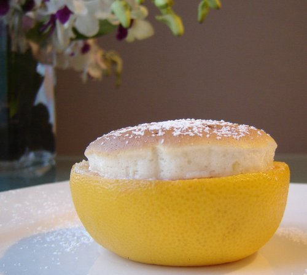

Grapefruit Souffle

Description
A grapefruit flavoured souffle, can be substituted for any other citrus. Bright ending for a summer patio dinner.
Ingredients
- 250g grapefruit juice, zest of grapefruit half
- 100g white sugar
- 15g cornstarch
- 30g water
- 2 egg whites (~70g)
Process
- Combine juice, half the sugar, and zest in saucepan over med-low heat. Simmer until reduced to 150ml then remove the zest.
- Combine cornstarch and water. Whisk into hot juice and continue whisking over low until thickened.
- Submerge pan in cold bath, whisk until mixture is cold (~3min).
- Whip eggwhites until soft peaks, then add remaining sugar and whip until stiff peaks.
- Fold eggwhites into juice gel in two batches.
- Divide into 6 ramekins or grapefruit halves (dust inside pith with sugar). Bake at 160*C for 15 mins or until puffed/browned.